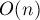

MAXimal
добавлено: 11 Jun 2008 10:44
редактировано: 10 Sep 2012 14:08
Содержание [скрыть]
Разбор выражений. Обратная польская нотация
Дана строка, представляющая собой математическое выражение, содержащее числа, переменные, различные операции. Требуется вычислить его значение за , где  — длина строки.
— длина строки.
Здесь описан алгоритм, который переводит это выражение в так называемую обратную польскую нотацию (явным или неявным образом), и уже в ней вычисляет выражение.
Обратная польская нотация
Обратная польская нотация — это форма записи математических выражений, в которой операторы расположены после своих операндов.
Например, следующее выражение:
в обратной польской нотации записывается следующим образом:
Обратная польская нотация была разработана австралийским философом и специалистом в области теории вычислительных машин Чарльзом Хэмблином в середине 1950-х на основе польской нотации, которая была предложена в 1920 г. польским математиком Яном Лукасевичем.
Удобство обратной польской нотации заключается в том, что выражения, представленные в такой форме, очень легко вычислять, причём за линейное время. Заведём стек, изначально он пуст. Будем двигаться слева направо по выражению в обратной польской нотации; если текущий элемент — число или переменная, то кладём на вершину стека её значение; если же текущий элемент — операция, то достаём из стека два верхних элемента (или один, если операция унарная), применяем к ним операцию, и результат кладём обратно в стек. В конце концов в стеке останется ровно один элемент - значение выражения.
Очевидно, этот простой алгоритм выполняется за , т.е. порядка длины выражения.
Разбор простейших выражений
Пока мы рассматриваем только простейший случай: все операции бинарны (т.е. от двух аргументов), и все левоассоциативны (т.е. при равенстве приоритетов выполняются слева направо). Скобки разрешены.
Заведём два стека: один для чисел, другой для операций и скобок (т.е. стек символов). Изначально оба стека пусты. Для второго стека будем поддерживать предусловие, что все операции упорядочены в нём по строгому убыванию приоритета, если двигаться от вершины стека. Если в стеке есть открывающие скобки, то упорядочен каждый блок операций, находящийся между скобками, а весь стек в таком случае не обязательно упорядочен.
Будем идти по строке слева направо. Если текущий элемент — цифра или переменная, то положим в стек значение этого числа/переменной. Если текущий элемент — открывающая скобка, то положим её в стек. Если текущий элемент — закрывающая скобка, то будем выталкивать из стека и выполнять все операции до тех пор, пока мы не извлечём открывающую скобку (т.е., иначе говоря, встречая закрывающую скобку, мы выполняем все операции, находящиеся внутри этой скобки). Наконец, если текущий элемент — операция, то, пока на вершине стека находится операция с таким же или большим приоритетом, будем выталкивать и выполнять её.
После того, как мы обработаем всю строку, в стеке операций ещё могут остаться некоторые операции, которые ещё не были вычислены, и нужно выполнить их все (т.е. действуем аналогично случаю, когда встречаем закрывающую скобку).
Вот реализация данного метода на примере обычных операций :
bool delim (char c) { return c == ' '; } bool is_op (char c) { return c=='+' || c=='-' || c=='*' || c=='/' || c=='%'; } int priority (char op) { return op == '+' || op == '-' ? 1 : op == '*' || op == '/' || op == '%' ? 2 : -1; } void process_op (vector<int> & st, char op) { int r = st.back(); st.pop_back(); int l = st.back(); st.pop_back(); switch (op) { case '+': st.push_back (l + r); break; case '-': st.push_back (l - r); break; case '*': st.push_back (l * r); break; case '/': st.push_back (l / r); break; case '%': st.push_back (l % r); break; } } int calc (string & s) { vector<int> st; vector<char> op; for (size_t i=0; i<s.length(); ++i) if (!delim (s[i])) if (s[i] == '(') op.push_back ('('); else if (s[i] == ')') { while (op.back() != '(') process_op (st, op.back()), op.pop_back(); op.pop_back(); } else if (is_op (s[i])) { char curop = s[i]; while (!op.empty() && priority(op.back()) >= priority(s[i])) process_op (st, op.back()), op.pop_back(); op.push_back (curop); } else { string operand; while (i < s.length() && isalnum (s[i]))) operand += s[i++]; --i; if (isdigit (operand[0])) st.push_back (atoi (operand.c_str())); else st.push_back (get_variable_val (operand)); } while (!op.empty()) process_op (st, op.back()), op.pop_back(); return st.back(); }
Таким образом, мы научились вычислять значение выражения за , и при этом мы неявно воспользовались обратной польской нотацией: мы расположили операции в таком порядке, когда к моменту вычисления очередной операции оба её операнда уже вычислены. Слегка модифицировав вышеописанный алгоритм, можно получить выражение в обратной польской нотаци и в явном виде.
Унарные операции
Теперь предположим, что выражение содержит унарные операции (т.е. от одного аргумента). Например, особенно часто встречаются унарный плюс и минус.
Одно из отличий этого случая заключается в необходимости определения того, является ли текущая операция унарной или бинарной.
Можно заметить, что перед унарной операцией всегда стоит либо другая операция, либо открывающая скобка, либо вообще ничего (если она стоит в самом начале строки). Перед бинарной операцией, напротив, всегда стоит либо операнд (число/переменная), либо закрывающая скобка. Таким образом, достаточно завести какой-нибудь флаг для указания того, может ли следующая операция быть унарной или нет.
Ещё чисто реализационная тонкость — как различать унарные и бинарные операции при извлечении из стека и вычислении. Здесь можно, например, для унарных операций вместо символа ![s[i]](../tex2png/cache/fd6f470cea3a6f4a8e40703f1a939deb.png) класть в стек .
класть в стек .
Приоритет для унарных операций нужно выбирать таким, чтобы он был больше приоритетов всех бинарных операций.
Кроме того, надо заметить, что унарные операции фактически являются правоассоциативными — если подряд идут несколько унарных операций, то они должны обрабатываться справа налево (для описания этого случая см. ниже; приведённый здесь код уже учитывает правоассоциативность).
Реализация для бинарных операций и унарных операций :
bool delim (char c) { return c == ' '; } bool is_op (char c) { return c=='+' || c=='-' || c=='*' || c=='/' || c=='%'; } int priority (char op) { if (op < 0) return 4; // op == -'+' || op == -'-' return op == '+' || op == '-' ? 1 : op == '*' || op == '/' || op == '%' ? 2 : -1; } void process_op (vector<int> & st, char op) { if (op < 0) { int l = st.back(); st.pop_back(); switch (-op) { case '+': st.push_back (l); break; case '-': st.push_back (-l); break; } } else { int r = st.back(); st.pop_back(); int l = st.back(); st.pop_back(); switch (op) { case '+': st.push_back (l + r); break; case '-': st.push_back (l - r); break; case '*': st.push_back (l * r); break; case '/': st.push_back (l / r); break; case '%': st.push_back (l % r); break; } } } int calc (string & s) { bool may_unary = true; vector<int> st; vector<char> op; for (size_t i=0; i<s.length(); ++i) if (!delim (s[i])) if (s[i] == '(') { op.push_back ('('); may_unary = true; } else if (s[i] == ')') { while (op.back() != '(') process_op (st, op.back()), op.pop_back(); op.pop_back(); may_unary = false; } else if (is_op (s[i])) { char curop = s[i]; if (may_unary && isunary (curop)) curop = -curop; while (!op.empty() && ( curop >= 0 && priority(op.back()) >= priority(curop) || curop < 0 && priority(op.back()) > priority(curop)) ) process_op (st, op.back()), op.pop_back(); op.push_back (curop); may_unary = true; } else { string operand; while (i < s.length() && isalnum (s[i]))) operand += s[i++]; --i; if (isdigit (operand[0])) st.push_back (atoi (operand.c_str())); else st.push_back (get_variable_val (operand)); may_unary = false; } while (!op.empty()) process_op (st, op.back()), op.pop_back(); return st.back(); }
Стоит заметить, что в простейших случаях, например, когда из унарных операций разрешены только и , правоассоциативность не играет никакой роли, поэтому в таких ситуациях никаких усложнений в схему можно не вводить. Т.е. цикл:
while (!op.empty() && ( curop >= 0 && priority(op.back()) >= priority(curop) || curop < 0 && priority(op.back()) > priority(curop)) ) process_op (st, op.back()), op.pop_back();
Можно заменить на:
while (!op.empty() && priority(op.back()) >= priority(curop)) process_op (st, op.back()), op.pop_back();
Правоассоциативность
Правоассоциативность оператора означает, что при равенстве приоритетов операторы вычисляются справа налево (соотвественно, левоассоциативность - когда слева направо).
Как уже было отмечено выше, унарные операторы обычно являются правоассоциативными. Другой пример - обычно операция возведения в степень считается правоассоциативной (действительно, a^b^c обычно воспринимается как a^(b^c), а не (a^b)^c).
Какие отличия нужно внести в алгоритм, чтобы корректно обрабатывать правоассоциативность? На самом деле, изменения нужны самые минимальные. Единственное отличие будет проявляться только при равенстве приоритетов, и заключается оно в том, что операции с равным приоритетом, находящиеся на вершине стека, не должны выполнять раньше текущей операции.
Таким образом, единственные отличия нужно внести в функцию calc:
int calc (string & s) { ... while (!op.empty() && ( left_assoc(curop) && priority(op.back()) >= priority(curop) || !left_assoc(curop) && priority(op.back()) > priority(curop))) ... }